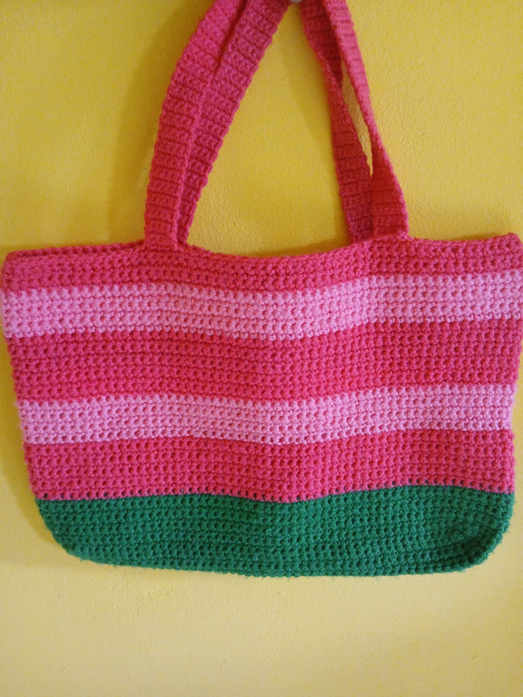
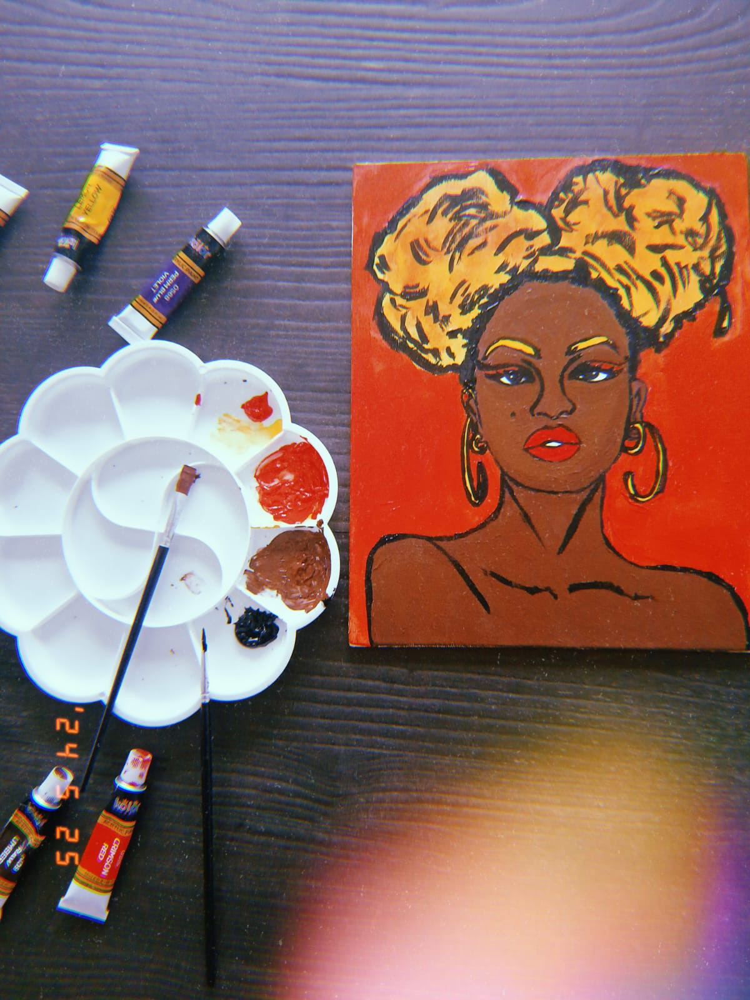
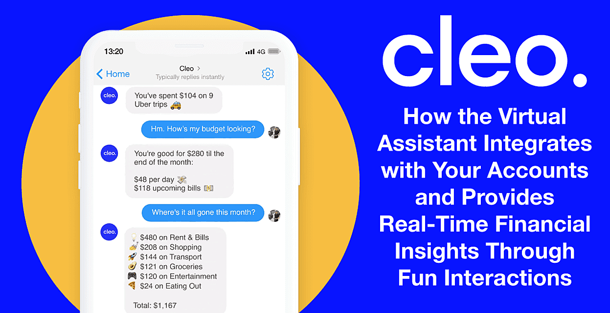

Although I study computer science, there is so much more to me than computers. I have a deep love for art, poetry, and anything that allows me to truly use my hands. Welcome—let’s dive into the ocean of my hobbies
I love learning new recipes, especially discovering little twists I can add to traditional Jamaican dishes. In the picture, I have curry goat with rice and peas and diced vegetables. Cooking as a hobby ensures I’m always fueled for school. Instead of buying fast food every day, I take the time to cook for myself, which gives me healthier options that are great for my brain and learning.

I got into crocheting around two years ago, and I’ve truly fallen in love with the craft. In the picture above is a watermelon-inspired bag I crocheted for a friend. Crocheting ensures that I take time for myself instead of focusing solely on school. It allows me to express the creativity I don’t always get to explore in class. Honestly, when I crochet during my study breaks, I feel rejuvenated and energized, ready to tackle my next session.

For as long as I can remember I've loved painting. Painting has a significant impact on my academic life by enhancing both my focus and creativity. When I engage in painting, I enter a state of concentration that allows me to clear my mind of distractions, which I can then carry over into my studies. It also encourages me to think outside the box and approach problems from different perspectives, a skill that is invaluable in academic projects and assignments.
Genre: Sci-Fi
Genre: Action
Genre: Animation
"I really try every day to be individual, and not just in my style or my look or my music, but in my approach to life."
Lauryn Hill, born in New Jersey in 1975 — a singer, rapper, songwriter, and actress
who first rose to fame as a member of the Fugees alongside Pras Michel and Wyclef Jean.
After early performances at the Apollo Theater and acting roles in As the World Turns and
Sister Act II, she chose to dedicate herself to music. She later launched a groundbreaking solo career,
but chose to step back from the spotlight to raise her children with Rohan Marley.
Lauryn Hill is my hero because her story shows strength, individuality, and the courage to stay true to herself.
As a child, during one of her very first performances, she was booed off stage, but instead of letting that moment
break her, she used it to grow, practice harder, and come back stronger. That resilience carried her through her career,
from her rise with the Fugees to her unforgettable solo success. What inspires me most is her love for individuality
— Lauryn has never been afraid to follow her own path, even when it meant stepping away from fame to focus on what
felt right for her. She chooses authenticity over popularity, artistry over trends, and truth over pleasing the crowd.
To me, her journey is proof that real greatness comes from being yourself and having the courage to stand by your values no matter what.
Learn more about Ms Hill at this site.
Based on the article. AI could add up to $13 trillion to the global economy by 2030 and if we want a piece of that pie we can follow these business ideas. My favourite out of all these ideas is the one that speaks about AI Driven Financial Literacy. This idea uses artificial intelligence to provide personalized investment guidance and financial planning to individuals and businesses. This is beyong helpful and cost effective for those who were paying for financial advice.
In today’s world, many people, especially young adults, lack access to affordable financial advice. Traditional financial advisors often charge high fees or require a minimum investment amount, making their services inaccessible to the average person. An AI-driven financial advisory app could change that. For instance, I could use such an app to manage my personal budget, plan for future goals, and receive investment suggestions based on my income, spending habits, and risk tolerance. Students and young professionals could use it to learn about finance while making smarter money choices, and businesses could also benefit by using AI systems to predict market trends and optimize investment portfolios without needing a large advisory team.
Although this is a great idea on paper, there are ethical concerns. One such issue is data protection—how users' information is being used. For example, I provide information such as my location, income, field of work, and spending habits to the AI, but how can I be sure this information isn’t being sold elsewhere? Another concern is that this technology could displace people from their jobs, specifically financial advisors.
We can address the data protection concern by ensuring that developers use strong encryption, multi-factor authentication, and transparent privacy policies to keep user data safe. Financial firms can also retrain human advisors to work alongside AI tools, allowing them to focus on more complex, relationship-based advisory roles.
